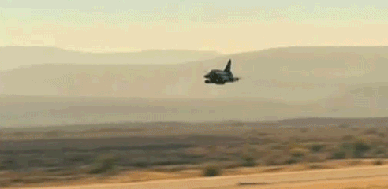
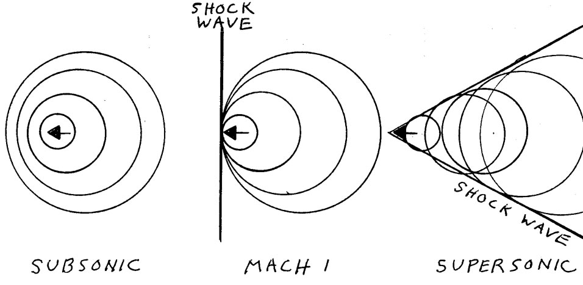
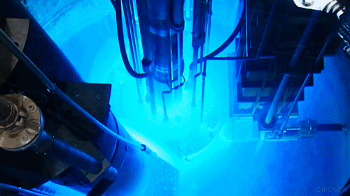

Cherenkov Radiation-Beauty behind nuclear reactions
Nuclear reactions are rarely considered beautiful as they are (rightfully) considered as a weapon of mass destruction. All of us know seen their destructive power through history books on Nagasaki & Hiroshima, as well as more recent events in Fukushima. However there is certain beauty to the reactions that take place in such bombs.
Before we get to nuclear part, at first we have to undestand few things about propagation of waves and what happens when object is travelling faster than them. Of course we are talking about the sonic boom.

It happens when the object is travelling faster than the waves themselves. Lets imagine a jet travelling at subsonic speeds; the waves propagate faster and smoothly pass on the wings of the plane. However, at supersonic speeds, the sound cannot escape and hence is compressed. What happens next is that few waves that are overlapped will interfere constructively to create a wave with much greater amplitude. There is a time lag in this process which is why we do not hear the sound straight away. Then, after few miliseconds have passed, we hear the resultant wave as massive boom (hence the name).
The next question is: what does it have to do with Cherenkov radiation? Well, the Cherenkov radiation is actually the result of sonic boom but not in sound but in light. Of course the first obstacle we may notice is, if the object has to travel at speed greater than the waves, how is it possible if nothing travels faster than speed of light?!? The answer is, it doesn't travel at the speed of light in vacuum as the speed changes with medium through which the light travels. As most nuclear reactions need some sort of moderator (to slow the reaction down), one of the most common used is heavy water. In such medium, light travels slower than in vacuum meaning that during reaction where really fast electrons are released (fission); they are able to travel faster than the waves of light. This also creates shock wave but this time its in the form of a bright blue glow.
